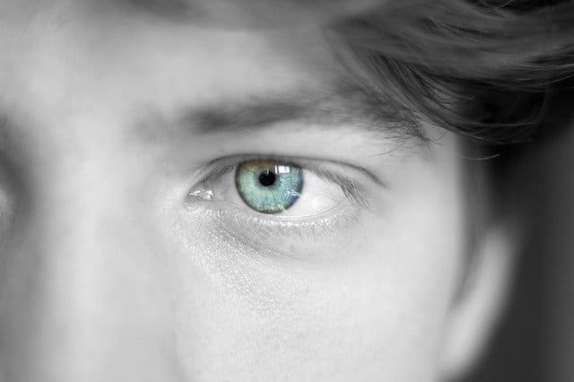
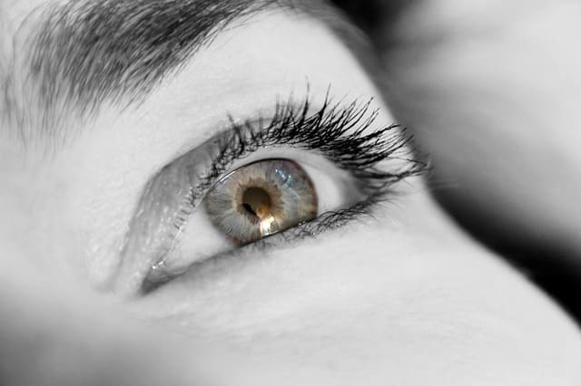
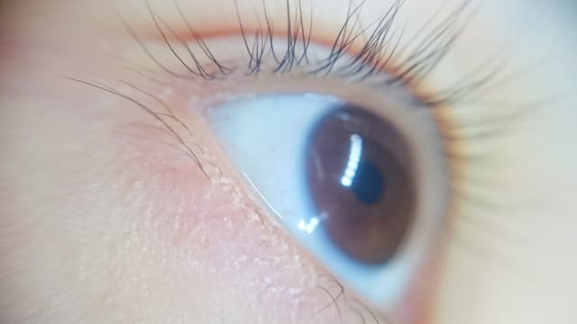

外傷性散瞳の鍼灸
眼や頭部の外傷で瞳孔調節筋や神経が損傷し瞳孔が開いたままになる状態です。眼科治療最優先で安定期の疲労ケアを支えます。
まず知っておきたい要点と改善の流れ
交通事故やスポーツ時の打撲など、眼や頭部への強い外傷によって、瞳孔の大きさを調節する虹彩の括約筋・散大筋や、それらを支配する神経が損傷することで瞳孔が開いたままになる状態です。光に対する反応が鈍くなり、強いまぶしさ、ピント調節障害、左右の瞳孔不同などが生じます。眼内出血や続発性緑内障などの合併症を防ぐため、受傷直後の眼科受診が必須です。（公式解説）
このようなお悩みはありませんか？
- ✓外傷後から強いまぶしさや光の散乱を感じる
- ✓近くや遠くにピントが合いにくく視力が落ちた
- ✓左右の瞳孔の大きさに差（瞳孔不同）がある
- ✓眼科管理を続けながら目の疲れや首肩こりを和らげたい
当院の施術アプローチ・改善の流れ
なぜ鍼灸で改善へ向かうのか？（作用機序の図解）
外傷性散瞳に対する鍼灸は、後頸部〜眼周囲の微小循環と毛様体筋・自律神経調整機序を通じて、お体本来の回復力を引き出します。

眼球周囲の危険な深刺しを避け、風池・天柱・合谷・太衝など安全な経穴へ繊細に施術します。
PC・スマホ作業や緊張で固まった首深層筋と眼輪筋周囲の血流を促し、重だるさを軽減します。
交感神経優位による目の乾き・ピント調節疲労を鎮め、涙液分泌とリラックス反応を助けます。
眼科の点眼・定期検査を最優先としつつ、日々の眼精疲労や頭痛・肩こりの連鎖を整えます。
院長YouTube解説・関連動画
公開日：２０２１年 ７月１１日
更新日：２０２３年 ９月 ５日
本日は外傷性散瞳について解説させていただきます。

☆本記事の内容
- •外傷性散瞳とは
- •外傷性散瞳の原因
- •外傷性散瞳の症状
- •外傷性散瞳の改善方法
- •外傷性散瞳のまとめ
- •外傷性散瞳は、瞳が大きくなったままの状態になること
- •外傷性散瞳の主な原因は交通事故
- •外傷性散瞳の症状は、瞳が開いたままの状態になること
- •症状を軽くするために虹彩が付いているコンタクトレンズを使う
- •医師に相談に行くことが大切
銀座そうぜん鍼灸院の宗前です。
このページを書いている私は、鍼灸師として１３年、担当した利用者様数８０，０００人を誇り、病気の休職者３００人を社会復帰できるまで回復させてきた実績があります。
🎥 他のYouTube切り抜き・解説を読む（あと1件）▼
外傷性散瞳は、瞳が大きくなったままの状態になること

外傷性散瞳は、交通事故などで瞳の大きさを調節する筋肉が損傷を受けると瞳の大きさを調節することができなくなり瞳が大きくなったままの状態になることです。
明るい場所でも瞳を小さくすることができないため、まぶしさを感じたり像がぼやけたりします。
外傷性散瞳の症状は、瞳が開いたままの状態になること
外傷性散瞳の症状は、瞳が開いたままの状態になることです。これは、眼球の筋肉である散大筋や括約筋に傷が付くことによって起こります。
外傷性散瞳を発症すると、必要以上の光が眼球に入ります。そのため、まぶしさを感じるようになったり見たい物にピントを合わせることが難しくなったりします。
外傷性散瞳は、目に外傷が生じたことで、瞳孔の形状や大きさが通常と異なる状態を指します。以下は、外傷性散瞳の主な症状について詳しく説明します。
1. 瞳孔の不均等:外傷性散瞳の最も顕著な症状は、瞳孔の形状や大きさの変化です。特に、両目の瞳孔の大きさが異なる場合、アニソコリアと呼ばれる状態が生じます。この症状は、外傷の影響範囲や深さによって異なります。
2. 光に対する反応の鈍化:正常な状態では、光が目に当たると瞳孔は縮小しますが、外傷によってその反応が鈍化することがあります。この症状は、夜間の運転や明るい場所での読書など、日常生活において不便を感じることがあります。
3. 視力の低下:外傷性散瞳は、単に瞳孔の形状の変化だけでなく、視力の低下を伴うことがあります。特に、外傷が角膜や水晶体に影響を及ぼした場合、焦点のずれや乱視を引き起こす可能性があります。
4. 眼の痛み:外傷の影響で眼の組織が損傷すると、炎症や感染を引き起こし、眼の痛みを感じることがあります。この痛みは、激しい場合や継続的に存在する場合、医師に判断してもらうことが必要です。
5. 瞳孔の中心がずれる:外傷により、虹彩の筋肉や組織が損傷すると、瞳孔の中心がずれたり、楕円形になることがあります。
6. 光の散乱:角膜や水晶体の損傷により、入射する光が散乱し、光の輪やハロ現象を引き起こすことがあります。
7. 瞳孔の不規則な動き:通常、瞳孔は均等に拡大または収縮しますが、外傷性散瞳では、瞳孔の動きが不規則になることがあります。
8. 視野の変化:外傷が網膜や視神経に影響を及ぼした場合、視野が狭まったり、一部が欠けるような症状が出現することがあります。
総じて、外傷性散瞳の症状は外傷の範囲や深さ、影響を受けた眼の部位によって異なります。外傷性散瞳の疑いがある場合や、何らかの症状を感じた場合は、専門家の意見を求めることが推奨されます。
外傷性散瞳は症状が軽い場合は時間が経つことで少しずつ改善します。しかし、眼球の筋肉の損傷が大きい場合、完全に改善を行っても完全に改善することは難しいです。
損傷が大きい場合、症状を軽くすることを目的として虹彩が付いているコンタクトレンズを使います。
さらに、症状の程度によっては続発性緑内障につながることもあります。そのため緑内障を防ぐための改善を行うこともあります。
外傷性散瞳は、目に外傷を受けた際に瞳孔の形状や大きさが変化する症状を指します。改善のアプローチは、外傷の程度や原因、症状や全般的な健康状態によって異なります。以下に外傷性散瞳の主要な改善法を説明します。
1. 保存的な方法
初期段階や軽度の外傷であれば、保存的方法が選択されることが多いです。
・冷却:外傷直後には、冷却パッドや冷たい布で目を冷やすことで、腫れや炎症の軽減を図ることができます。
・抗炎症薬:非ステロイド性抗炎症薬（NSAIDs）やステロイド薬が、炎症の抑制や痛みの軽減のために処方されることがあります。
2. 手術
重度の外傷や、保存的方法に応じない場合には、手術が検討されます。
・瞳孔形成術:瞳孔の形を正常に戻すための手術で、瞳孔の周囲の組織を修復・調整します。
・人工瞳孔挿入:瞳孔の損傷が重度の場合、人工瞳孔を挿入して視力を回復・保持することが可能です。
・角膜移植:角膜に重大なダメージがある場合、健康なドナーの角膜を移植することで、視力を改善することができます。
3. リハビリテーション
外傷による視力の低下や視野の変化がある場合、視覚リハビリテーションが必要となることがあります。
・視覚トレーニング:視覚の機能を最大限に活用するためのトレーニングや、新しい視覚技術の習得をサポートします。
・低視力補助具の使用:拡大鏡や読書スタンドなど、日常生活での視覚のサポートをするための補助具の使用を学びます。
4. 定期的なフォローアップ
外傷性散瞳の改善後も、定期的に眼科医にいくことが重要です。改善の経過を確認し、再発や合併症のリスクを低減させます。
結論として、外傷性散瞳の改善法は多岐にわたります。症状や外傷の程度によって最適な改善方法が選択されるため、専門家と十分なコミュニケーションをとりながら、最良の方法を選ぶことが重要です。
外傷性散瞳は目に受けた外傷の結果、瞳孔が不規則になったり、通常よりも大きくなる状態を指します。外傷によって引き起こされる散瞳は、しばしば瞳孔の周囲の筋肉や組織の損傷によるものです。改善法は損傷の程度や症状によって異なりますが、以下に、外傷性散瞳の改善に使う薬の種類やその適応、効果について説明します。
・抗炎症薬
種類: 非ステロイド性抗炎症薬（NSAIDs）やステロイド薬など。
適応している人: 軽度から中等度の炎症や腫れを示す人。
効果: 炎症の抑制や腫れの軽減、痛みの緩和します。
・散瞳薬
種類: アトロピンやトロピカミドなどの薬剤。
適応している人: 瞳孔の筋肉をリラックスさせることで痛みを緩和したい場合や、眼内検査を行う前に瞳孔を広げる必要がある人。
効果: 瞳孔の拡大や筋肉のリラックス。瞳孔を一時的に拡大させることで、眼の内部を詳細に調べることができるようになります。
・瞳孔収縮薬
種類: ピロカルピンなど。
適応している人: 一部の外傷後や手術後に瞳孔のサイズを一時的に小さくしたい場合。
効果: 瞳孔を縮小させます。これは、瞳孔の筋肉に対して直接作用することで達成されます。
・抗生物質の点眼薬や軟膏
種類: シプロフロキサシン、トブラマイシンなど。
適応している人: 外傷によって眼の感染リスクが高まった場合。
効果: 眼の感染を予防します。
これらの薬は外傷性散瞳の改善だけでなく、他の眼の病気や症状の改善にも使用されることがあります。そのため、適切な薬を選択し、使用する際には必ず専門家の指示に従うことが重要です。
瞳孔が散大していることに気が付いたり、片方の瞳孔がもう片方と比べて大きく見えたりするときはすぐに医師に相談に行くことが大切です。
使用することで瞳孔が散大する可能性がある薬もあります。抗ヒスタミン薬や充血除去薬、乗り物酔いの薬、制嘔吐剤やボツリヌス毒素を含んでいる薬などです。
いずれにしても気になることがある場合は、すぐに眼科医相談に行くことをお勧めいたします。


ドライアイ・眼精疲労・まぶたのツボ図解
実際の施術ではお一人おひとりの体質・症状に合わせて選穴しますが、ドライアイ・眼精疲労・VDT症候群・眼瞼下垂/けいれんのケアの臨床でよく用いられる代表的なツボの目安です。

📌 代表的なツボの詳細一覧表を開く（6穴） ▼
| ツボ名 | 位置の目安 | 主な狙い | セルフケアの注意点 |
|---|---|---|---|
| 攅竹（さんちく） | 眉頭の内側のくぼみ | まぶたの重だるさ・涙液分泌の副交感神経サポート | 眼球を押さず眉骨の縁に向かって優しく押します。 |
| 魚腰（ぎょよう） | 眉毛のちょうど真ん中、黒目の真上 | 眼瞼下垂・眼瞼けいれん・まぶたの疲労緩和 | 目を閉じて軽く3秒ほど当てて離します。 |
| 絲竹空（しちくくう） | 眉尻の外側のくぼみ | 目の奥の痛み・側頭部の張り・かすみ目ケア | コンタクトレンズは外した状態でケアすると安全です。 |
| 太陽（たいよう） | こめかみのくぼみ | デスクワーク後の目の疲れ・こめかみ痛の緩和 | 蒸しタオルで目元を温めたあとに行うと効果的です。 |
| 四白（しはく） | 黒目の真下、頬骨の小さなくぼみ | 下まぶたのけいれん・眼窩下部の循環改善 | 皮膚を強くこすらず垂直に軽く触れます。 |
| 合谷（ごうこく） | 手の甲、親指と人差し指の間 | 頭顔面・目の緊張を和らげる全身調整穴 | 仕事中の合間にも手軽に押せるツボです。 |
国際査読論文の科学的エビデンス
国際的な医学データベース（PubMed・Cochrane等）で報告されているドライアイ・眼精疲労・VDT症候群・眼瞼下垂/けいれんのケア領域の代表的な査読済み鍼灸研究をまとめています（標準治療との併用や研究上の限界を含めて正確に掲載）。
📚 査読論文データ・PubMed出典リンクを開く（4件） ▼
| 年・研究デザイン | 対象・規模 | 主な結果 | 限界・出典 |
|---|---|---|---|
| 2024年 メタ解析 | ドライアイ 16試験（n=1,383：人工涙液併用） | BUT（SMD 1.25, P<0.0001）、シルマー試験（SMD 1.55, P<0.0001）、角膜染色・総有効率（OR 4.09）が有意改善。 | 自覚症状OSDIは有意差なし（P=0.15）。人工涙液との併用評価。 Medicine (PMID: 38181299) |
| 2019年 二重盲検RCT | ドライアイ 49名（米国・6か月追跡） | 実鍼群はOSDIスコアが1週〜6か月まで有意改善（6か月p<0.01）、乾燥感・充血も有意軽減。 | 小規模・客観的涙液指標（TBUT等）は有意差なし。 Clin Ophthalmol (PMID: 31114151) |
| 2020年 Cochraneレビュー | 緑内障・高眼圧症 3 RCTs（n=137） | 一時的な眼圧低下の報告はあるが8週時点で差消失、視力は有意差なし。 | 全試験が高バイアス・確実性非常に低。点眼治療の代替不可。 Cochrane (PMID: 32032457) |
| 2025年 メタ解析 | 変性眼疾患 21研究（緑内障・黄斑変性等） | 総有効率はOR 3.52（p<0.00001）だが、統合視力（p=0.50）・眼圧（p=0.11）に有意差なし。 | 非ランダム化研究含む。眼科標準管理下での補完研究段階。 Complement Ther Med (PMID: 40850524) |
参考文献・出典
- 銀座そうぜん鍼灸院「外傷性散瞳の公式解説ページ」
- 2024年 メタ解析（ドライアイ 16試験（n=1,383：人工涙液併用））— Medicine (PMID: 38181299)
- 2019年 二重盲検RCT（ドライアイ 49名（米国・6か月追跡））— Clin Ophthalmol (PMID: 31114151)
- 2020年 Cochraneレビュー（緑内障・高眼圧症 3 RCTs（n=137））— Cochrane (PMID: 32032457)
- 2025年 メタ解析（変性眼疾患 21研究（緑内障・黄斑変性等））— Complement Ther Med (PMID: 40850524)
よくある質問（FAQ）
Q. けがをして瞳孔が開いたままですが鍼灸に行ってもよいですか？▼
Q. 症状が固定した後にできるケアはありますか？▼
あわせて読まれる関連疾患（眼のお悩み）
遺伝性に黄斑部の視機能が低下する指定難病の総称です。眼科専門医での管理を最優先に、安定期の眼精疲労や首肩こりをケアします。
網膜の中心である黄斑に丸い穴が開き中心視力が低下する病気です。早期の眼科手術を最優先に、術後安定期の疲労をケアします。
胎生期の前眼部形成過程で角膜混濁などが生じる指定難病です。眼科治療を最優先に、安定期の眼精疲労ケアをサポートします。
上まぶたが垂れ下がり視界が狭くなる状態です。医療機関での診断を基本とし、攅竹・絲竹空・魚腰などのツボで筋緊張を和らげます。
網膜の後方で焦点が結ばれる屈折異常です。眼科での矯正を基本とし、太陽や和髎などのツボを活用した鍼灸で眼精疲労をケアします。
遠くの物がぼやけて見える屈折異常です。眼科での適切な矯正と生活習慣の見直しに加え、鍼灸で眼精疲労や緊張を和らげます。
おひとりで悩まず、まずはご相談ください
銀座本院・川口・大宮・横浜・博多・田無の各院でご予約を承っております。